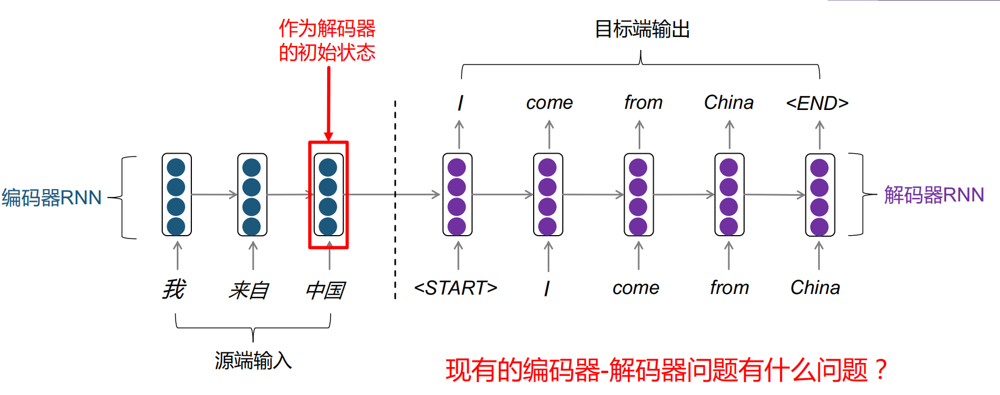

自然语言处理笔记
编码器-解码器框架
- 编码整个源端句子的信息，容易成为信息承载的瓶颈
- 翻译过程不具有可解释性
- 目标端解码某个特定单词时，应该重点关注源端相关的单词
BERT
- Bidirectional Encoder Representation from Transformers
- 它强调了不再像以往一样采用传统的单向语言模型或者把两个单向语言模型进行浅层拼接的方法进行预训练，而是采用新的masked language model（MLM），以致能生成深度的双向语言表征。
- https://zhuanlan.zhihu.com/p/98855346
您好，这是Bing。😊
GloVe和word2vec都是词嵌入模型，可以根据词汇的共现信息，将词汇编码成一个向量。² 两者的区别在于，word2vec是一个基于预测的模型，而GloVe是一个基于计数的模型。¹
word2vec通过预测中心词或上下文词来学习词向量，而GloVe通过利用整个语料库的全局词-词共现矩阵来学习词向量。³ 这导致了两种模型生成的词向量具有不同的特性。³
好的，我来给您介绍一些更多的细节。
word2vec有两种训练方法：连续词袋模型（CBOW）和跳字模型（Skip-gram）。¹ CBOW通过给定上下文词来预测中心词，而Skip-gram通过给定中心词来预测上下文词。¹ 这两种方法都是基于局部窗口的，只考虑了词汇在语料中的相邻关系。¹
GloVe则是通过构建一个全局的词-词共现矩阵，来度量任意两个词汇之间的相关性。² GloVe的目标函数是使得每对词汇的向量内积等于它们在共现矩阵中的对数值。² 这样，GloVe可以捕捉到词汇之间的线性关系，例如king - man + woman = queen。³
word2vec和GloVe各有优缺点。word2vec可以更好地保留语义相似性，而GloVe可以更好地保留语义类比性。⁴ word2vec可以动态地更新词向量，而GloVe需要重新计算共现矩阵。⁵ word2vec可以处理低频词汇，而GloVe可能会忽略它们。⁵
一、自然语言处理简介
- 自然语言处理的概念、难点、应用、意义
- 自然语言处理概念：利用计算机对自然语言进行各种加工处理、信息提取及应用的技术
二、基于规划的自然语言处理
- 中文分词：方法、歧义以及如何消歧
- 歧义
- 交集型歧义：ABC划分成AB/C或A/BC
- 组合型歧义：AB切分成AB或A/B
- 混合型歧义：由交集型歧义和组合型歧义嵌套与交叉而成
- 伪歧义、真歧义
- 伪歧义字段指在任何情况下只有一种切分
- 根据歧义字段本身就能消歧
- 真歧义字段指在不同的情况下有多种划分
- 根据歧义字段的上下文来消歧
- 伪歧义字段指在任何情况下只有一种切分
- 歧义
- 规划方法的优点与缺点
- 规则质量依赖于语言学家的知识和经验，获取成本高
- 规则之间容易发生冲突
- 大规模规则系统维护难度大
- 基于规则的歧义字段消歧方法
- 利用歧义字串、前驱字串和后继字串的句法、语义和语用信息
三、语言模型与词向量
- 统计语言模型的定义、参数估计、平滑以及公式推导等
- 语言模型是衡量一句话出现在自然语言中的概率的模型
- 语言模型的核心在于根据前文预测下一个词出现的概率
- Zipf Law
- 如果以词频排序，词频和排位成反比（乘积接近一个常数）
- 隐藏信息、数据稀疏问题（对于未出现在语料中的词或n-gram，无法估计其概率）
- 离散词表示 vs 连续词表示
- 分布式词表示的核心思想：一个词的含义能被这个词所在的上下文反映
- CBOW和skip-gram的异同
- 连续词典模型（CBOW）：利用单词 的上下文 预测单词
- skip-gram：利用单词 预测单词 的上下文
- 都是基于局部窗口的，只考虑了词汇在语料中的相邻关系。
- 优点：能捕获语法和语义信息；缺点：速度和数据规模相关、未能有效利用统计数据，不能很好地学到全局的信息
- word2vec如何加速训练：负采样
- GloVe的核心思想：
- 共现概率矩阵
- 单词 的词向量
- 以学习的方式，用词向量之间的语义关系来拟合共现概率矩阵
- 优点：训练快；适应于大规模数据；在小规模数据上性能优秀
四、神经网络和语言模型
- 深层网络的问题以及如何理解
- RNN 梯度爆炸、梯度消失
- 长短期记忆网络，线性变换，缓解远程梯度爆炸和梯度消失问题
- 深层网络更容易产生梯度问题（梯度连乘后容易接近0（消失）或者爆炸）
- 梯度消失常用解决方案：ReLU、残差连接
- 梯度爆炸常用解决方案：梯度裁剪（Clipping）
- Teacher forcing是一种在训练神经网络时使用的技术。在这种技术中，每次训练时，不使用上一个state的输出作为下一个state的输入，而是直接使用训练数据的标准答案的对应上一项作为下一个state的输入。这种技术能够在训练的时候矫正模型的预测，避免在序列生成的过程中误差进一步放大。
五、高级神经网络和预训练模型
- 注意力机制的设计目的与应用领域
- 注意力机制：目标端解码时，直接从源端句子捕获对当前解码有帮助的信息，从而生成更相关、更准确的解码结果
- 优点：缓解RNN的信息瓶颈问题；缓解长距离依赖问题；具有一定的可解释性
- 基于注意力机制的编码器-解码器框架
- 基于注意力机制的文本分类模型
- 注意力机制：目标端解码时，直接从源端句子捕获对当前解码有帮助的信息，从而生成更相关、更准确的解码结果
- 循环神经网络的问题
- 有限的信息交互距离
- RNN能捕捉局部信息，但无法很好地解决长距离依赖关系
- 不能很好地建模序列中的非线性结构关系
- 无法并行
- RNN 的隐层状态具有序列依赖性
- 时间消耗随序列长度的增加而增加
- 有限的信息交互距离
- Transformer的组件、设计原理，尤其是position embedding
- Transformer
- 完全基于attention机制构建的神经网络模型
- 直接建模输入序列的全局依赖关系
- 并行计算
- 编码器
- 位置编码
- 为什么：注意力计算是加权和；无法考虑相对位置关系
- 三角函数表示：直接根据正余弦函数计算位置编码（不需要从头学习，直接计算得出）
- 从头学习：随机初始化位置编码 ，并跟随网络一起训练（能更好地拟合数据）
- 多头自注意力机制
- 并行地计算多个自注意力过程，并拼接输出结果
- 残差连接
- 将浅层网络和深层网络相连，有利于梯度回传
- 使深处网络的训练变得更加容易
- 层正则（Layer Normalization）
- 对输入进行标准化
- 加速收敛，提升模型训练的稳定性
- 位置编码
- 解码器
- Cross Attention：解码时需要关注源端信息
- Masked Attention：解码时（训练）不应该看到未来的信息
- Transformer
- 序列到序列问题实际建模
- BERT
- Masked Language Model（MLM）
- 随机选择一部分词并mask掉，要求预测出mask掉的词
- 同时建模双向信息但不会泄露目标词的信息
- Next Sentence Prediction（NSP）
- 对于文本中连续的两个句子，以一定的概率替换掉其中某个句子
- 预测两个句子是否是连续的
- 为了使得模型能理解句子之间的关系
- Masked Language Model（MLM）
- BERT
六、文本分类
-
朴素贝叶斯概念及计算
- 一个概率模型，生成式模型
- 建模联合概率，生成式模型
- 朴素假设：特征之间相互独立，即任意两个词出现的概率互不影响
- 计算
- 伯努利文档模型：表示文本时只考虑单词是否出现，不考虑出现次数
- 一个概率模型，生成式模型
-
逻辑斯蒂回归、softmax回归等概念与相关计算
- 逻辑斯蒂回归
- 逻辑斯蒂是一种二分类模型（线性分类模型）
- 用一个非线性激活函数（Sigmoid函数）来模拟后验概率
- softmax回归
- softmax回归是一种多分类模型，也叫做多分类逻辑回归
- 在NLP中，也被称作最大熵模型
- 逻辑斯蒂回归
-
卷积神经网络
- 为什么做卷积
- 在图像中，用于获取平移不变性的特征
- 用相同的卷积核对不同的位置进行卷积
- 为什么做池化 pooling
- 为什么能做：池化不会改变目标对象的整体信息
- 为什么要做：使目标对象更小，节省网络参数
- 即在减少数据量的同时保留有用信息
- max pooling 最大池化：抽取代表性特征信息
- average pooling 平均池化：全面考虑特征信息
- 为什么做卷积
-
使用预训练词向量并微调词向量：微调能使得词向量学习到任务相关的语义信息
七、序列化标注
-
序列化标注：给定一个观测序列作为输入，输出是一个标记序列或状态序列
-
马尔科夫链：描述在状态空间中，从一个状态到另一个状态转换的随机过程
-
马尔科夫假设：马尔科夫链在任意时刻 的状态只依赖于它在前一时刻的状态，与其他时刻的状态无关
-
隐马尔可夫模型 HMM
- 是一阶马尔科夫链的拓展
- 状态序列不可见
- 隐藏的状态序列满足一阶马尔可夫链性质
- 可见的观察值与隐藏的状态之间存在概率关系
-
HMM 方法的问题
- 只考虑当前时刻的特征，无法融入更多的特征（如上下文）以表示复杂的关系
- 转移概率做了局部归一化，容易产生标签偏置问题
-
CRF
- 判别式模型，直接建模后验概率，类似于LR
- 通常用线性链CRF建模序列化标注任务
- 模型可以融合各种手工设计的特征
- 可以引入领域知识
- 可解释性强
- 可以快速地训练和解码
- 维度高
- 缺少语义表达能力
-
词性标注：BILSTM
- 利用双向LSTM建模上下文信息，将上下文信息同时融入序列化标注
- 问题
- 输出的词性标签之间相互独立，只依赖于当前时刻的特征表示
- 实际上，词性标签之间存在序列相关性。例如，动词后经常会接名词
-
BILSTM-CRF
- 在BiLSTM的基础上添加CRF，建模序列依赖性
- LSTM-CRF通过跳转矩阵P建模词性标签之间的依赖关系
-
LSTM-CNN-CRF
- 利用CNN来建模单词内的字符串信息
- 一些特定的字符串（如英语中各种与词性相关的前缀、后缀）对词性标注是有帮助的
八、句法分析
- 句法分析
- 成分句法分析：研究词如何构成短语、短语如何构成句子
- 上下文无关文法（Context-free Grammar，CFG）
- CFG定义语言中的有效结构，它通过形式化方法定义句子中有意义的成分，以及一个成分是如何由其他成分（单词或短语）构成的
- 自顶向下的句法分析 问题
- 需要搜索的树数量达到指数级别
- 许多子树是相同的，存在重复解析
- CKY算法（自底向上的动态规划算法）
- 对已分析的子树进行存储（记忆化），避免重复解析
- 动态规划，将分析中间结果存放在表中，减少重复计算
- 复杂度 ， 是句子长度， 是文法中规则的数量
- 算法前提：上下文无关文法CFG转换为乔姆斯基范式CNF
- 问题：歧义
- 上下文无关文法（Context-free Grammar，CFG）
- 依存句法分析：研究词之间的依赖（或支配）关系
- 成分句法分析：研究词如何构成短语、短语如何构成句子
- PCFG计算
- CKY计算
九、序列生成-机器翻译
- 机器翻译的思想、深度学习建模
- 翻译步骤
- 分析：将源语言句子解析成一种深层的结构表示
- 转换：将源语言句子的深层结构表示转换成目标语言的深层结构表示
- 生成：根据目标语言的深层结构表示生成对应的目标语言句子
- 基于实例的机器翻译
- 从双语语料库中学习翻译实例
- 利用类比思想，避免复杂的结构分析
- 从语料库中查找与待翻译句子相近的实例，通过逐词替换进行翻译
- 问题
- 检索的实例粒度一般为句子，无法支持较长文本的翻译
- 实例相似度较低时翻译欠佳
- 从双语语料库中学习翻译实例
- 翻译步骤
- 贪心解码与柱搜索
- 贪心解码：解码时，每个时刻从解码器取出概率最大的词作为预测结果
- 问题：某一时刻的错误翻译会影响后续所有翻译，因此不一定能解码出全局最佳（译文概率最大）的译文
- 枚举解码：解码时枚举所有的翻译结果 。极其耗时
- 柱搜索解码：在贪心搜索基础上扩大搜索空间，从而更有可能解码出全局最优的译文
- 核心思想：在 时刻，保留 个概率最大的翻译结果
- 相比于枚举，极大提高搜索效率
- 并不能保证一定解码出最优的译文
- 核心思想：在 时刻，保留 个概率最大的翻译结果
- 贪心解码：解码时，每个时刻从解码器取出概率最大的词作为预测结果
- BLEU的定义、计算、存在的问题
- 定义
- 一种衡量机器翻译质量的自动评估指标
- 统计机器翻译译文与参考译文中 元文法匹配的数目占系统译文中所有 元文法总数的比例，即 元文法的精确率
- 存在的问题
- 精确率 的计算公式中分母为机器翻译译文，译文越短， 的值倾向更大
- 具有偏向性，对于漏翻的词不敏感
- 定义
十、自然语言处理范式演进
- Prompt 的核心思想、为什么能 work
- 训练好大模型后，怎么激发模型的能力
- 为什么会 work
- Prompt 设计题
- 可以设计我们自己的一个体现模板
- Prompt Learning 和 Instruction Learning 的区别与联系
- prompt工程：设计合适的prompt（提示文本），将下游任务转换为对应的语言模型任务